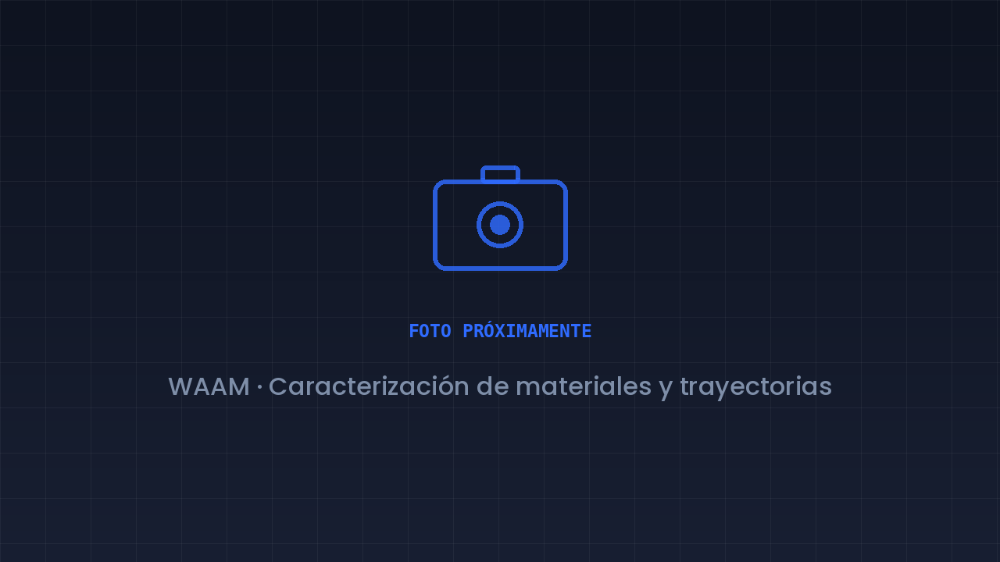
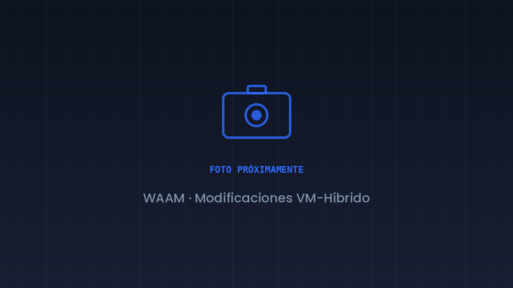
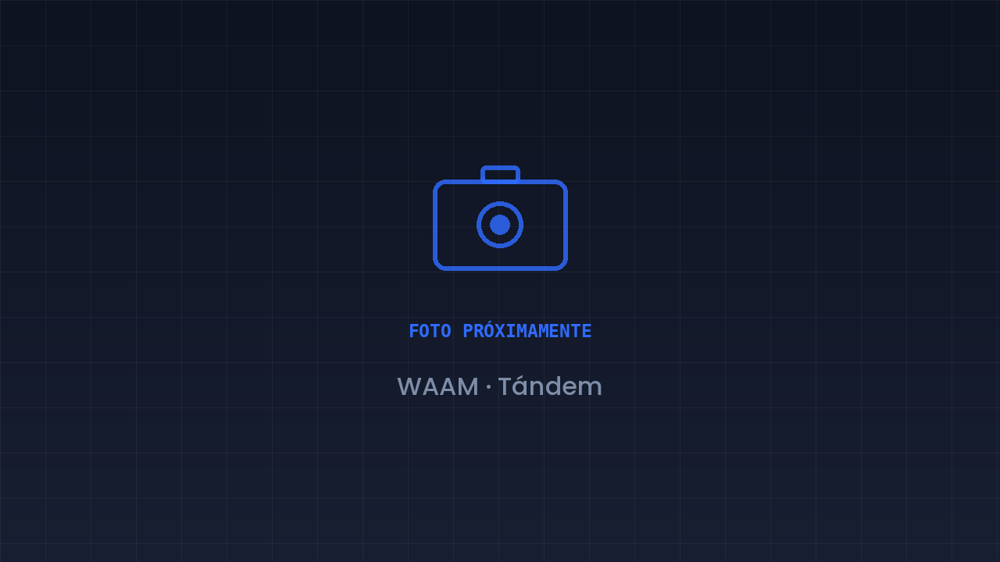
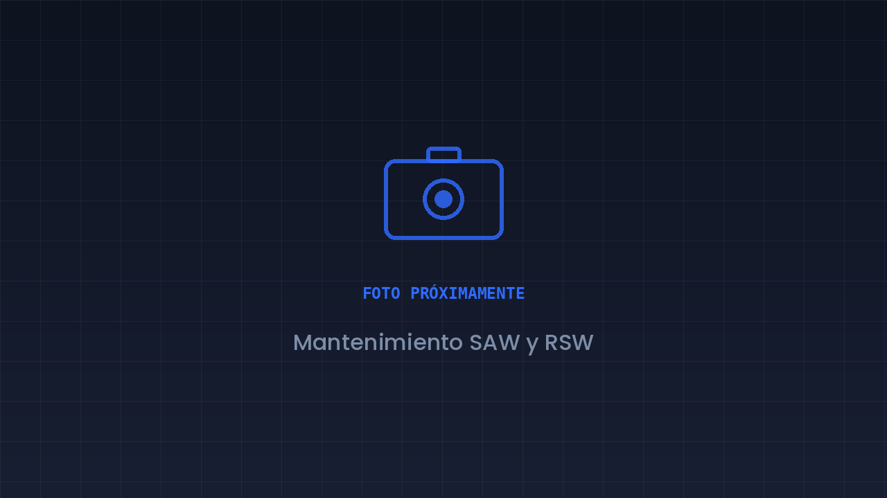
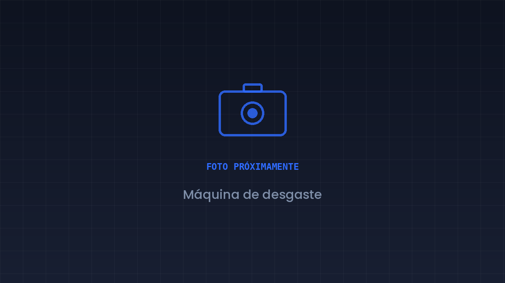
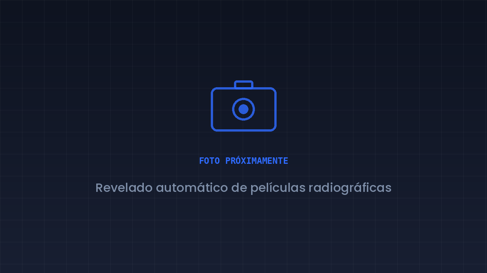
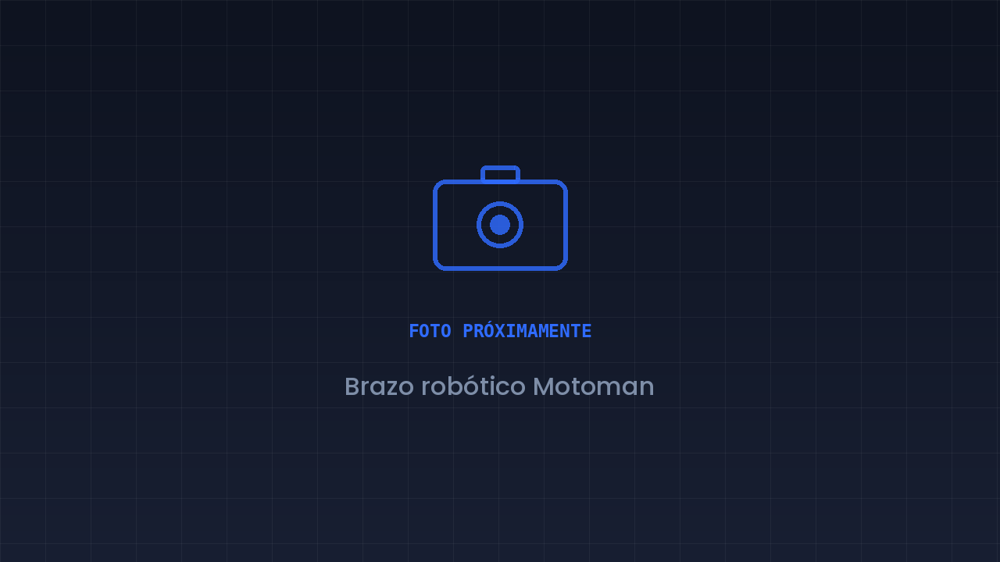
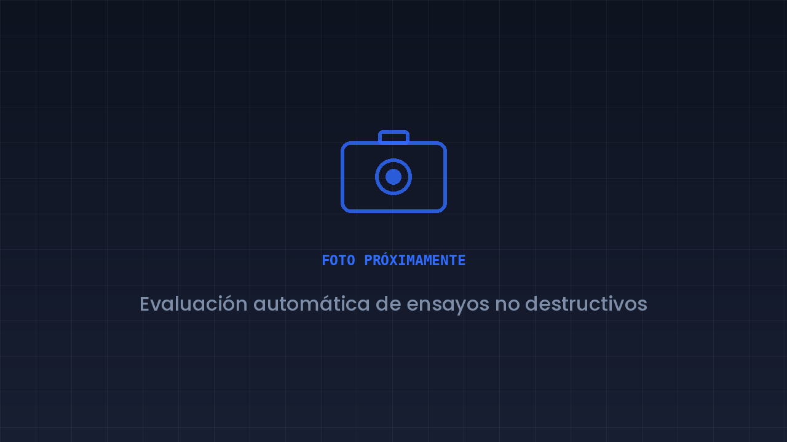
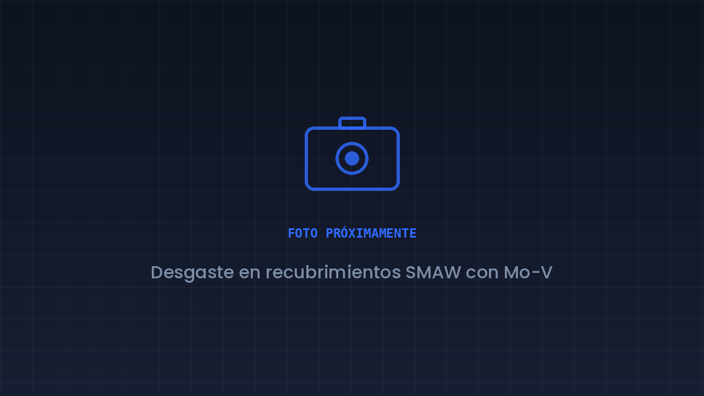

WAAM - (Wire Arc Additive Manufacturing)
En el grupo contamos con la capacidad de realizar manufactura aditiva de metales por deposición de energía directa (AM-DED), donde la tecnología se basa en el deposito continúo de alambre usando un arco electrico (WAAM-GMAW). Previamente, caracterizamos el equipo y las piezas que produce, pero ahora estamos desarrollando las modificaciones que amplían sus capacidades y estudiamos cómo se comporta el material depositado capa a capa. Se espera conseguir un servicio de prototipado con metales y ser pioneros en el país sobre esta tecnología

En este proyecto buscamos definir las propiedades que obtienen los materiales al ser producidos por este proceso de manufactura relativamente moderno. A su vez, exploramos aplicaciones que pueden fabricarse con el sistema del laboratorio, como: Prototipado de piezas, moldes rápidos, elementos artísticos, reparaciones, juntas soldadas, entre muchas otras.

Ampliación y modificación del equipo WAAM con enfoque inicial en la independencia de la alimentación de material. Se busca en el futuro implementar un sistema de visión de máquina junto a elementos que permitan la automatización del proceso. Con esto, se abren puertas investigativas y academicas sobre control, soldadura orbital y automatizada, IoT, manufactura Tandem, anexos de control de calidad y los efectos productivos del mecanizado In Situ paralelos a la manudactura de productos.

Depósito con más de un alambre o material de forma simultánea, dentro del concepto de ampliación por estaciones del equipo. Estudio de materiales compuestos (escala de milimetros)
- Manufactura aditiva por arco sumergido (SAAM) — Explorar el depósito aditivo usando el equipo de arco sumergido del laboratorio.
- Escalar el equipo WAAM para llegar a ser un servicio riguroso y de alta productividad
- Múltiples materiales y gradientes — Depositar más de un material en una misma pieza para obtener propiedades graduales.
Mantenimiento y Automatización
Mantenimiento, modernización y automatización de los equipos del laboratorio: arco sumergido, soldadura por resistencia, robótica aplicada a soldadura y montajes propios para ensayo e inspección.

Ingeniería inversa, mantenimiento y modernización de los equipos de soldadura por arco sumergido y por resistencia en puntos del laboratorio.

Reconstrucción y modernización de la máquina de desgaste: estructura, conexiones eléctricas, instrumentación y control.

Diseño y construcción de un equipo que automatice el revelado y fijado de películas radiográficas del laboratorio.

Adaptación del robot industrial Motoman MH6 para procesos de soldadura, incluyendo la protección del robot y del riel sobre el que se desplaza.

Diseño y construcción de modificaciones mecanicas y electicas sobre el equipo WAAM que permitan superar el umbral actual en el volumen de trabajo, faciliten los mantenimientos y permitan sistemas independientes de automatizacion mientras mantienen la portabilidad del equipo y futuras ampliaciones.
- Soldadura de tuberías y bajo el agua — Habilitar el movimiento y los accesorios que hoy limitan al equipo de arco sumergido.
- Gemelo digital de los equipos — Modelo digital de la máquina de desgaste y del resto de montajes intervenidos.
- GTAW mecanizado en paralelo — Adaptar el proceso GTAW a los montajes automatizados existentes.
Ensayos No Destructivos
Inspección de materiales y uniones sin afectar su integridad, y desarrollo de herramientas propias para hacer esa evaluación más rápida, más repetible y menos dependiente del criterio de un solo observador.

Herramientas de reconocimiento automático (enfoque en Deep Learning) aplicadas a la evaluación de ensayos no destructivos, empezando por la radiografía industrial.
- Partículas magnéticas y líquidos penetrantes — Llevar la evaluación automática a estos dos métodos después de RT.
- Corrientes parásitas — Estudiar el método de eddy current y sus aplicaciones en el laboratorio.
- Escaneo ultrasónico automatizado — Automatizar el barrido por ultrasonido, con posible reconstrucción tridimensional.
- Visualización de campos magnéticos — Equipo para observar el comportamiento del campo usado en partículas magnéticas.
Materiales
Línea en construcción. Estudia el material como resultado del proceso: recubrimientos, soldabilidad, comportamiento frente al desgaste y caracterización de las piezas que fabricamos.

Evaluación del comportamiento frente al desgaste de recubrimientos duros depositados por soldadura con electrodo revestido usando electrodos aleados con molibdeno y vanadio.
- Recubrimientos duros por soldadura — Depósito y evaluación de recubrimientos resistentes al desgaste.
- Soldabilidad de aceros y aleaciones — Criterios de soldabilidad y su efecto sobre la unión final.
- Caracterización mecánica y microestructural — Ensayos y metalografía como cierre de los proyectos de fabricación.
Didáctica y Divulgación
Línea en construcción. Convertir lo que aprendemos en material que otros puedan usar: guías, cursos, entornos de entrenamiento y divulgación del trabajo del grupo.
Línea en construcción
Estamos definiendo los primeros proyectos de esta línea. Si te interesa el tema de divulación incluyendo el diseño gráfico y la logística, es un buen momento para entrar.
- Objetos virtuales de aprendizaje (OVA) — Material de estudio especializado en soldadura e inspección.
- Entrenamiento con háptica y sensórica — Entorno virtual para practicar soldadura antes de tomar el equipo real.
- Divulgación del grupo — Página web, redes y publicación de artículos en revistas científicas.